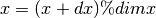
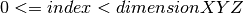

DXFile — YYYYYYY¶
This module provides YYYYY.
Module Syntax¶
Empty.
Module Contents¶
- class DXFile.DXBox¶
This class stores the output of an APBS calculation.
- getDimensionX()¶
Docstring missing.
- getDimensionY()¶
Docstring missing.
- getDimensionZ()¶
Docstring missing.
- setDimensions(dim, y = 0, z = 0)¶
Docstring missing.
- getDimensions()¶
Docstring missing.
- getMaxSideLength()¶
Docstring missing.
- makeCubic(fillInValue, sidelength = 'noValue')¶
Docstring missing.
- enlargeBox(dim, fillInValue)¶
This method enlarges the box.
- has_same_size_as(other_dxbox)¶
Docstring missing.
- translate(dx, dy = 0, dz = 0)¶
Translates all nodes by the given distance along each axis. The box is continuous, thus nodes which are translated over the right edge of the grid are reintroduced at the left edge.
Example: With the grid x-Dimension being 97 and the node at x-positon 96 being translated by 3 along the x-axis, the nodes new x-position will be 2: 
TODO: changed, check if new method is correct!
- getNodesByValue(value)¶
Gets a list of all nodes which hold the given numerical value.
- getNodesWithoutValue(value)¶
Gets a list of all nodes which DO NOT hold the given numerical value.
Parameters: value – value to NOT search for Returns: vector-list of all nodes without supplied value
- multiply(factor_dxbox)¶
Docstring missing.
- subtract(substrahend_dxbox)¶
Docstring missing.
- determineEpitopeNodes(nodes, atoms, meshSize, radius)¶
Method takes a list of nodes and returns these which are epitope-associated.
Nodes which reside within the supplied distance from at least one of the supplied residues are considered epitope-associated.
Alogrithm:
compare every surface-associated node to every atom of every epitope-associated residue: If this node is within a given range of an atom, it is epitope-associated and added to the list.Parameters: - nodes – vector-list of epitope candidate nodes
- atoms – vector-list atoms which describe the epitope
- meshSize – array with mesh spacing of this grid
- radius – radius of atoms within which nodes are considered epitope-associated
Returns: vector-list of epitope-associated nodes
Warning
I don’t know what Niko is doing here exactly, but I’ll find that out ... eventually ;)
- count_nodes_with_value(value)¶
Returns number occurrences of a given value within this grid.
- count_nodes_without_value(value)¶
Docstring missing.
- getUniqueValues()¶
Returns unique values within this grid.
Warning
Nikos code is very complex here (with threshold and so on), so I don’t know if I miss something, though the name of the function is very clear.
- getRotateBox(theta, phi, psi, fillInValue)¶
Return a rotated copy of this grid with nodes rotated around the grid center.
This can be seen as rotating the protein and thus the specific information (van-der-Waals surface or electrostatic potential) within this grid.
I use euler-angles, so it is actually phi, theta, psi (x, y, z). You can look up Euler angles at wikipedia to understand what I do here, it is different from Niko’s!
- determineConsensoursDimensions(grid1, grid2)¶
Returns the consensus grid size of two grids.
- add_box(box)¶
Docstring missing.
- divide_by_scalar(d)¶
Docstring missing.
- transform_real_to_box_space(atom_coord)¶
This method transforms coordinates from the real to the box space.
- transform_box_to_real_space(grid_coord)¶
This method transforms coordinates from the box to the real space.
- indices_in_box(indices)¶
This method checks, if the given indices lie inside the box, i.e they lie in: .
- write_deprecated(filename, values_per_line = 3)¶
Write an array to a dx-file.
- _write_deprecated(outfile, values_per_line)¶
Docstring missing.
- write(filename, values_per_line = 3)¶
Write an array to a dx-file.
- _write(outfile, values_per_line)¶
Docstring missing.
- class DXFile.DXReader¶
Docstring missing.
- parse_old(filename, boxType)¶
Method to parse supplied DX file. This one is rather slow!
Returns a VDWBox for ‘vdw’ and ‘smol’ box types, otherwise it returns a DXBox.
- parse(filename, boxType)¶
Docstring missing.
- _parse_depreciated(filename, boxType)¶
Method to parse supplied DX file. This one is twice as fast as the one above (but this depends on the size of the DXFile of course)!
- class DXFile.VDWBox(DXBox)¶
Docstring missing.
- assignNodeIDs()¶
Docstring missing.
- applyPeptideScore(score)¶
Applies a given score to peptide. Method will retrieve actual peptide (peptide nodes without solvent access) if surface- and peptide score are identical. If surface-score is different from peptide score(peptide nodes are thus distinguishable from others) given score is applied to those.
Parameters: score – score to apply
- applySolventScore(score)¶
Applies a given score to surface. Method will retrieve actual surface (peptide nodes with solvent access) if surface- and peptide score are identical. If surface-score is different from peptide score(surface nodes are thus distinguishable from others) given score is applied to those.
Parameters: score – score to apply
- applySurfaceScore(score)¶
Docstring missing.
- clone()¶
Docstring missing.
- createPotentialArea(areaWidth)¶
Artificially enlarges the protein surface into surrounding solvent. Then sets score within original and artificial surface to 1. Everything else is set to 0.
Parameters: areaWidth – area width
- enlargeBox(dim)¶
Warning
TODO: Does this work? probably not ;)
- determineActualInnerPeptideNodes()¶
This Method determines and return an array containing all nodes without solvent access. Algorithm works as follows: if a node is non solvent-accessible(surface or inner node), and has no neighbors which are solvent, the node is an inner node.
- determineActualSurfaceNodes()¶
This method determines and returns an array containing all nodes with direct solvent access.
- determineEpitopeSurfaceNodes(atoms, meshSize, rangeCutoff)¶
TODO: made use of a more generic method to determine epitope nodes. Method resides in super-class DXBox
 determine Epitope nodes.
determine Epitope nodes.
- flood_old_slow(self)¶
The VDW grid is a grid of 0’s and 1’s, like this:
1 1 1 1 1 0 0 1 1 0 1 1 1 1 1 1
The algorithm starts at [0,0,0] and appends the neighbors, which have a value equal to a solvent grid node (i.e. 1), to the newFront-list. After all neighbor nodes from the first list have been checked, the list gets deleted and contains now the new neighbors. The process is repeated until now new neighbors are found, that is there are no new neighbors.
Then the remaining solvent values are treated as protein nodes (i.e. they are set to a peptide score, which is 0). All nodes that have been assigned a temp value are then set back to 1.
- flood()¶
This method is the same as flood_old_slow, but it has been written in cython and is therefore at least twice as fast!
- calculate_sas()¶
Calculate the solvent accessible surface.
- find_surface()¶
This method finds the surface of the protein and assigns ‘score_of_surface’ to these points. The box should have been flooded before using this function!
In contrast, find_solvent surface yields the surface that lies in the surface. Both surfaces should lie directly next to each other.
- find_solvent_surface()¶
This method finds the surface that lies in the solvent and encapsulates the protein and assigns ‘score_of_surface’ to these points. The box should have been flooded before using this function!
In contrast, find_surface yields the surface that lies in the protein. Both surfaces should lie directly next to each other.
- prepare_for_geometric_matching(interior)¶
This method prepares the box for geometric matching. It sets the solvent to 0, the surface to 1 and the protein interior to the given value. This value should be -15 for the fixed protein and 1 for the rotated according to Katchalski-Katzir.
The values for ‘solventScore’, ‘peptideScore’, etc. are not updated!
- getPeptideNodes()¶
Returns: a vector containing all nodes with peptide score
- getSolventNodes()¶
Docstring missing.
- getSurfaceNodes()¶
Returns: a vector containing all nodes with surface score
- extendSurface(iterations)¶
Method to artificially enlarge the protein surface into surrounding solvent.
- extend_nice_surface(iterations, dummy_score = 1000)¶
Docstring missing.
- getNeighborList(seed, radius = 1)¶
Generates a List of nodes surrounding a seed-node (0, 0, 0) within a given radius.
- highlightEpitope(atoms, meshSize, rangeCutoff, score)¶
Docstring missing.
- invertScore()¶
Method to invert scores of protein/peptide and solvent.
- getRotatedBox(theta, phi, psi)¶
Docstring missing.
- setRotatedNode(rb, x, y, z, value)¶
Method to alter score for a larger set of nodes.
- setElementsRange(nodes, value)¶
Docstring missing.
- smoothSurface(iterations, gradient = 1.0)¶
Docstring missing.